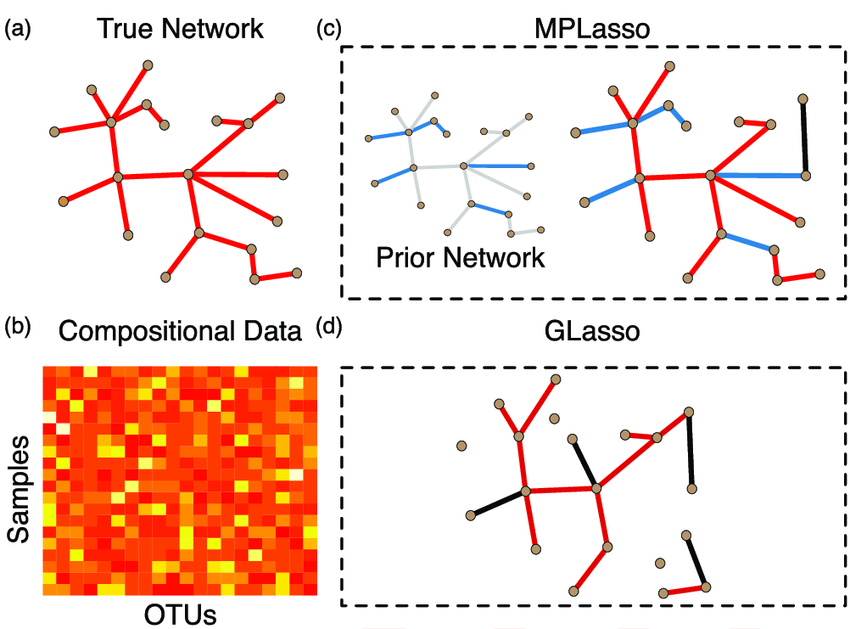
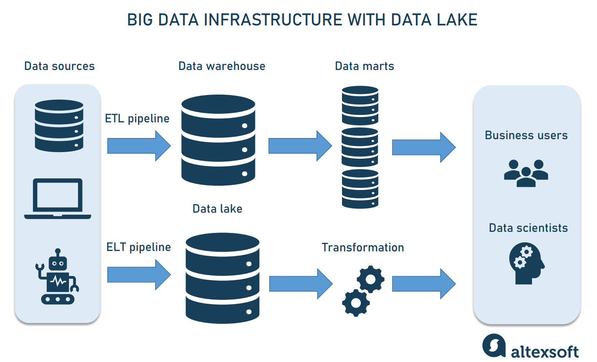
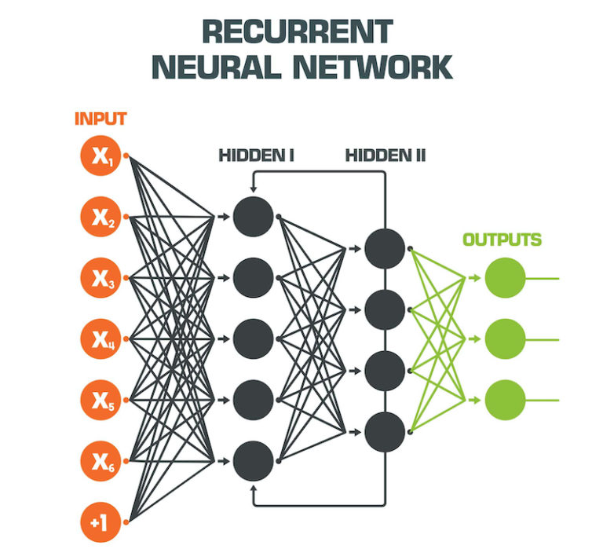

Domain: Sports Analytics
Result: Identified Erling Halaand as the best player for transfer on the basis of age, growth potential and overall rating
Skills Used: K-Means Clustering, Data Engineering, Plotly, Unsupervised Learning, Regular Expression

Domain: Music Industry
Result: Discovered that music affects the well-being of a country; Categorisation of songs into popular and non-popular types depends on similar quantitative attributes characterising the songs
Skills Used: Data Engineering, Plotly, Supervised Learning, Matplotlib, Web Scraping, Seaborn
Grade Achieved: Distinction

Domain: Novel Techniques in Machine Learning
Result: Identified stacking produces the best classification model and Graphical Lasso Model performs the best to identify the dependence among the variables.
Skills Used: Supervised Learning, R Programming, Regression, Report Writing, LaTeX
Grade Achieved: Distinction
Domain: Driving License
Result: St. Albans is the optimal driving center as per the statistical analysis. Hence, we can suggest our friend for taking the test in St. Albans over London.
Skills Used: Data Engineering, R Markdown, Logistic Regression, GGPlot2, Technical Writing
Grade Achieved: Distinction

Domain: Data Engineering and Distributed Computing
Result: Time complexity of the machine learning algorithms to produce results decreases with improvement in computational resources
Skills Used: Data Engineering, Google Cloud Platform, PySpark, Matplotlib, Machine Learning
Grade Achieved: Merit

Domain: Finance and Investment
Result: Financial news helps in improving the accuracy of price predictions. News helps in capturing the public sentiments which influence financial markets.
GAN models perform considerably well across machine learning models
Skills Used: TensorFlow, Seaborn, Time-Series, Deep Learning, Sentiment Analysis
Grade Achieved: Merit
Domain: Finance & Banking
Result: Designed a model with 96% accuracy in assessing the category of target clients. Married clients with tertiary education along with no active housing and personal loan status identified as ideal targets through analysis
Skills Used: Data Engineering, Plotly, Supervised Learning, Imbalanced Learning, XGBoost
Domain: Finance & Investment
Result: Created a model with 56% accuracy in forecasting the profitability of IPO; another model with 62% accuracy in speculating the current profit based on subscription status, issue size, issue price and listing day performance
Skills Used: R, Python, Logistic Regression, Exploratory Data Analysis, Support Vector Machines